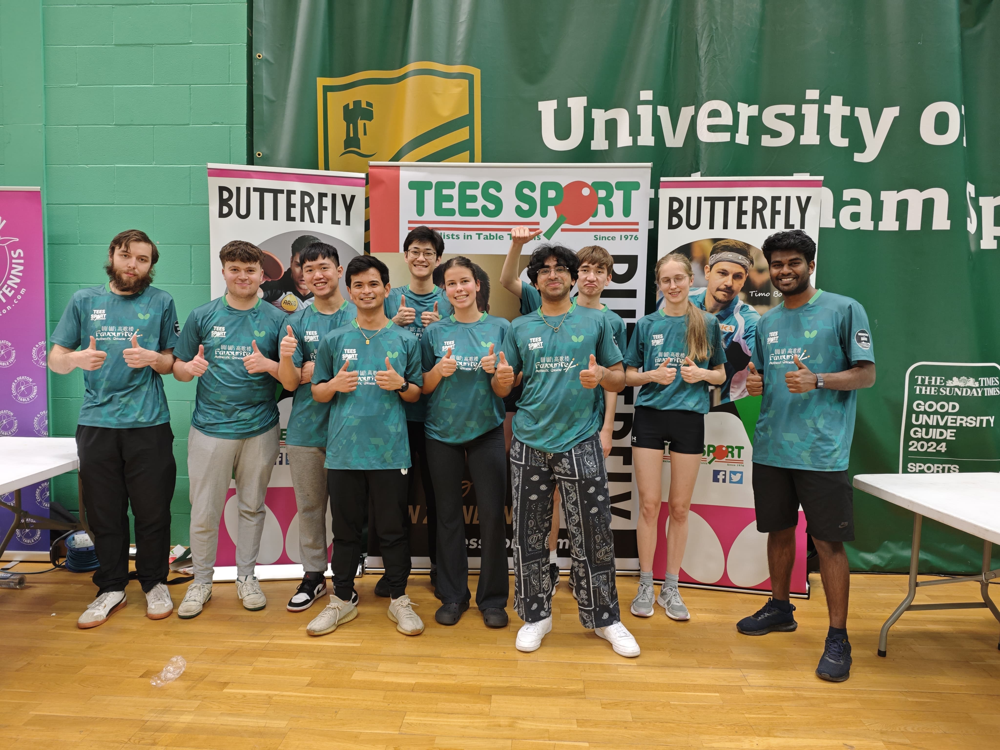
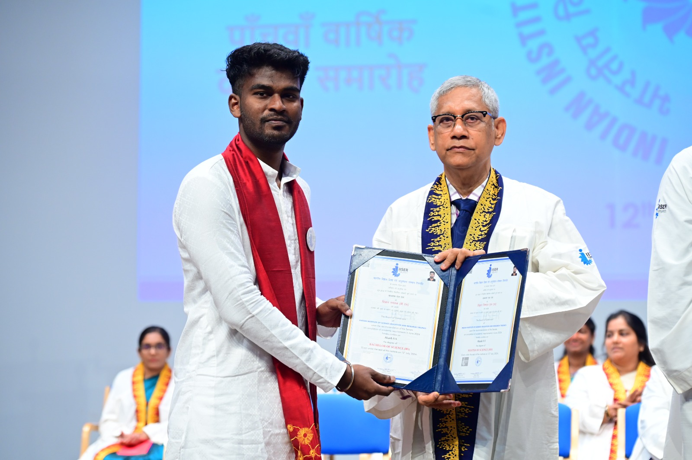

I study what happens when a molecule hits a surface.
I'm a 2nd-year PhD student in the Surface Dynamics group at Swansea University. When a molecule bounces off a metal, some of its energy can end up in surface vibrations. Nickel is a reactive surface, so this exchange matters for catalysis. I use helium spin-echo scattering and perform matrix computations in MATLAB to measure and fit it.
Before this I did a BS–MS in Chemistry with a minor in Physics at IISER Tirupati. My earlier work ranged from quantum dots for gas sensing to protein modelling with Prof. Shuguang Zhang's group at MIT, which led to three published papers.
Outside the lab I play table tennis, edit videos and enjoy teaching maths.

From Google Scholar, October 2026.
Google Scholar profile ↗Research
Energy transfer in D₂ scattering from Ni(111)Current PhD project2025 – now
When a molecule bounces off a metal, it can leave some energy behind as surface vibrations (phonons). I analyse helium spin-echo data of D₂ on Ni(111) to see how much energy is exchanged, and with which surface modes.
Rayleigh and longitudinal surface modesSpectral analysis
The spectra show peaks from different vibrational modes of the surface. I fit them and compare how strongly each one takes part in the energy exchange.
Where it's heading: rotational controlLonger-term direction
The bigger question is whether the rotational orientation of a molecule changes how it exchanges energy with a surface, and eventually whether that can steer a surface reaction. I presented a poster on this at the FSE PGR Conference 2026 at Swansea.
Publications
Papers3 published, 1 in preparation
- Sajeev-Sheeja A, Karagöl A, Karagöl T, Zhang S (2025). Molecular dynamics simulations and structural bioinformatics of bacterial integral alpha-helical membrane enzymes and their AlphaFold2-predicted water-soluble QTY analogues. Molecular Simulation 51(15), 984–998.
- Sajeev-Sheeja A, Zhang S (2024). Structural molecular modeling of bacterial integral membrane protein enzymes and their AlphaFold2 predicted water-soluble QTY variants. Journal of Proteins and Proteomics 15(4), 635–645. doi
- Sajeev-Sheeja A, Smorodina E, Zhang S (2023). Structural bioinformatics studies of bacterial outer membrane beta-barrel transporters and their AlphaFold2 predicted water-soluble QTY variants. PLOS ONE 18(8). doi
- Krishna A, Sajeev-Sheeja A, Zhang S (2025). Structural bioinformatics studies of beta-helix enzymes and their QTY variants. In preparation
Conferences and talks
- FSE PGR Conference 2026, Swansea University. Poster: Rotational Orientation Control of Molecule Surface Energy Transfer.
- University of Cambridge, Cavendish Laboratory, 4 August 2026. Talk: Molecule Surface Energy Transfer in a Reactive System.
- ICATPDD 2024, Amsterdam. Invited to present a poster.
- AMR Research Conference 2024, Bengaluru. Paper submitted.
Experience and education
PhD, Physical ChemistrySwansea University2025 – 2028
Surface Dynamics group, Faculty of Science and Engineering. Molecule–surface energy transfer measured with helium spin-echo.
BS–MS Chemistry, minor in PhysicsIISER Tirupati2019 – 2024
Five-year integrated degree. My master's thesis was an online project with MIT on protein structure prediction and validation of the QTY code (thesis score 9.5/10).

Research intern, Molecular Architecture and Design LabMIT (remote)2022 – 2024
- Studied beta-barrel, alpha-helical and beta-helix membrane proteins with Prof. Shuguang Zhang.
- Used AlphaFold2 to model water-soluble QTY variants of 16 proteins.
- Led to the papers listed under Publications.
Project traineeCSIR–Institute of Microbial Technology, Chandigarh2024
Wet-lab work on purifying computationally designed QTY variants of beta-barrel membrane proteins, supervised by Dr. Krishan Gopal.
Semester project, Soft and Active Matter LabIISER Tirupati2023
Assembled core–shell nanoparticles with hematite cores and silica shells. Characterised them with DLS, ELS and optical microscopy.
Research internIndira Gandhi Centre for Atomic Research, Kalpakkam2022
Made and characterised SnO₂ quantum dots for gas sensing, and fabricated gold interdigitated electrodes on SiO₂ by RF sputtering.
Project studentIndian Institute of Tropical Meteorology, Pune (remote)2022
Data analysis and a presentation for the Cloud-Aerosol Interaction and Precipitation Enhancement Experiment.